| 日付 | 2016年5月5日（木） - 2016年5月7日（土） | ||
|---|---|---|---|
| 山域 | 伊豆諸島 | ||
| メンバー | 家族（妻、長女・5歳、長男・2歳） | ||
| 山行形態 | 子連れ2泊3日ホテル泊 | ||
| アクセス | 電車、船、車、バス | ||
| ルート (Map) |
|
今年のGWは伊豆大島に行く。
3泊4日で三原山を中心にゆっくり観光する予定だったが、
5/4は暴風雨の影響で船が動かずキャンセル。
2泊3日に予定を変更し、1日遅れで出発する。
1日目
ゆりかもめに乗って竹芝埠頭を目指す。
高いところを走るため、非常に展望が良い。
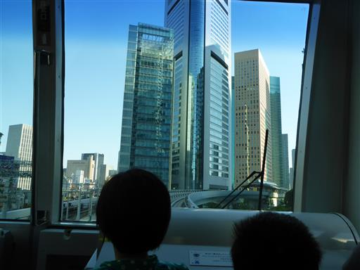
竹芝埠頭に到着。伊豆大島へはジェット船で向かう。
時速80kmで進む非常に速い船だ。そのため船のサイズは小さめだ。

船内の様子。全席指定席で、航行中に移動はできない。
船というより飛行機に近い内装だ。
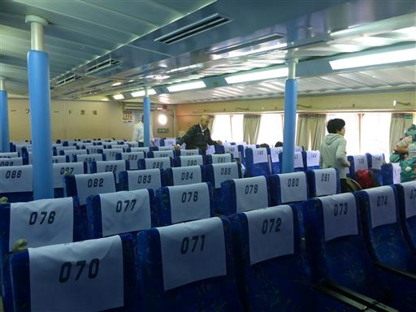
東京湾を進んでいく。多くのクレーンが並んでいる。
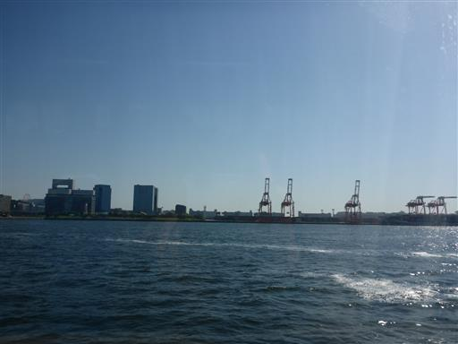
1時間半ほどで伊豆大島が見えてくる。
ジェット船とはいえ、それなりに時間はかかる。
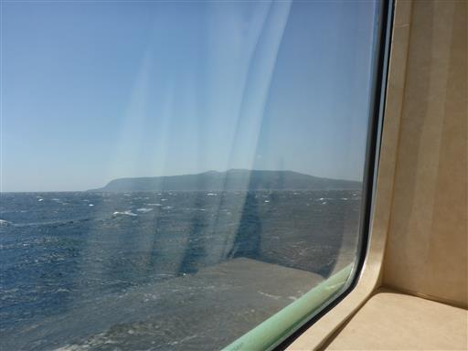
岡本港に到着。伊豆大島に上陸だ。
伊豆大島には元町港というもう1つ大きな港がある。到着する港は天候によって異なるようだ。
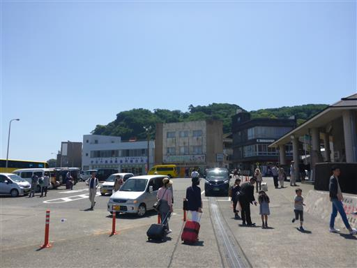
レンタカーを借りて元町港に移動する。
本日は非常に風が強く波が高い。
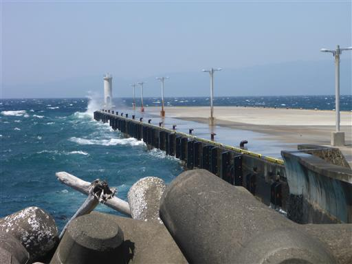
遠く海の向こうに富士山が薄ら見えている。
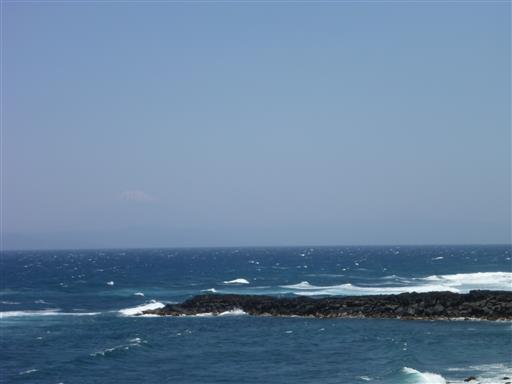
三原山も良く見えている。
絶好の快晴なのだが、登山をするには風が強すぎる。
子供達は風を嫌がっているため、本日の登山は断念。
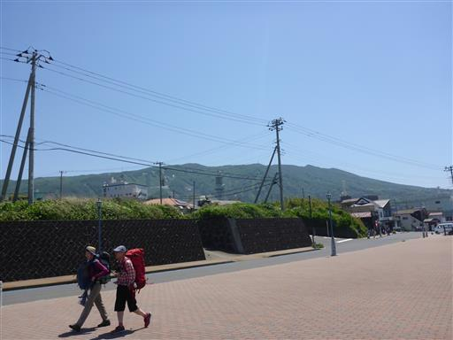
お昼時なので、レストラン「季まま亭」で昼食をとる。
夫婦のみで経営しているようで、なかなか料理が出てこなかった。
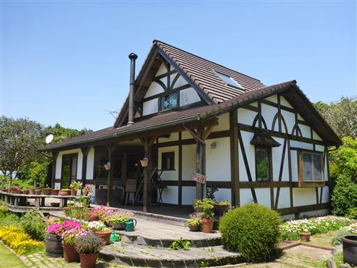
風が強すぎるため、初日からなかなか目的地が定まらず…。
とりあえず地層大切断面を見に行くことにする。
ここは道路建設工事中に偶然発見されたもので、630mに渡り縞模様が続いている。
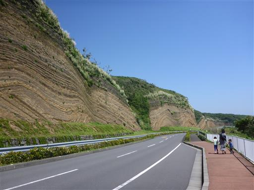
反対方向は真青な海に利島が浮かんでいる。
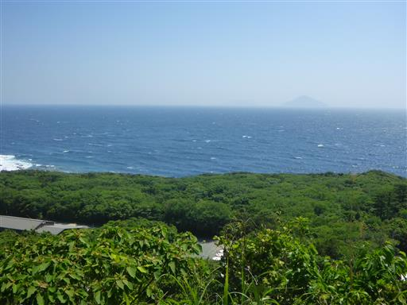
足元に黄色いスミレがたくさん咲いている。
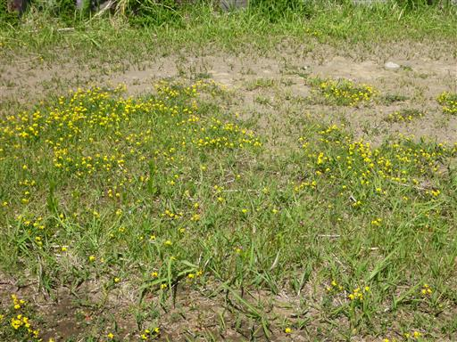
間近で見ると見事な地層が見られる。
この縞模様は、別名バウムクーヘンと呼ばれている。
何度も噴火を繰り返した三原山の噴火記録だ。
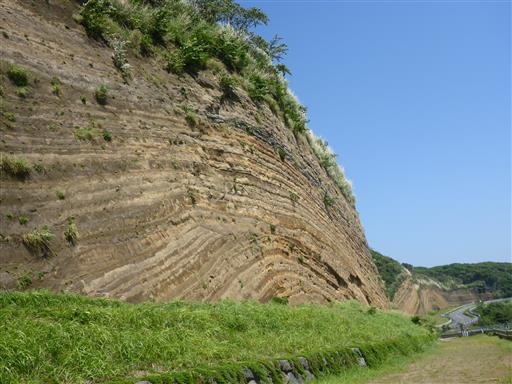
伊豆大島の南に回り込んで、トウシキ公園に到着。海で遊べる場所を探してみる。
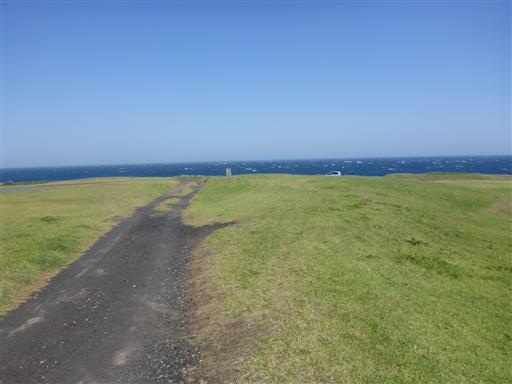
こちらの方角からも三原山がきれいに見える。
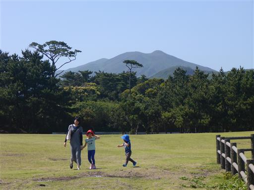
海岸線を歩いてみるが風が強すぎるため、子供はパス。
海から離れた風の弱い場所で遊ぶことにする。
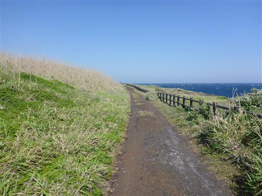
一人で少し海岸線を散策する。
眼下に溶岩流でできたトンネルが見える。
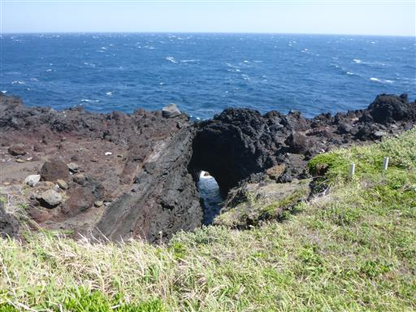
ボムサッグ。噴火の際に飛んできた噴石が地面にめり込んだものだ。
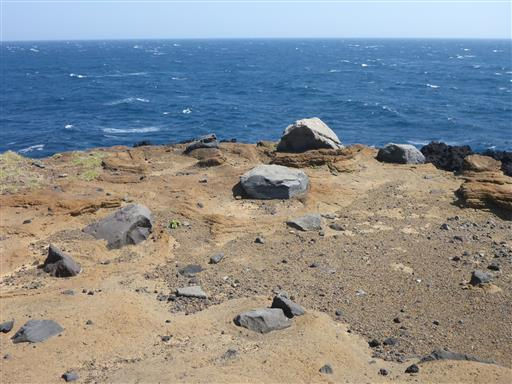
子供達は遊具で遊んだり松ぼっくりを集めたりして遊んでいる。
いつまでもここで遊ぶ訳にもいかないので、次の目的地を検討する。
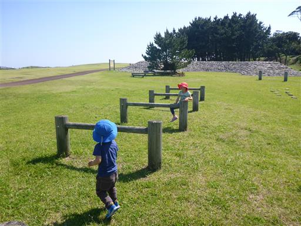
伊豆大島の海に行ってみたいので、風の影響を受け無さそうな
日の出浜に行くことにする。岡田港のすぐ側にある小さな浜だ。
結局、伊豆大島をぐるっと回って岡田港に戻ることになる。
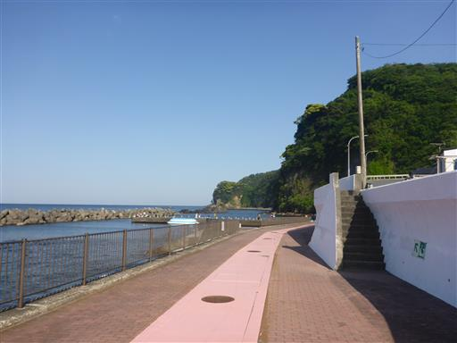
日の出浜は港の近くにある小さな浜辺なのだが、水が非常にきれいだ。
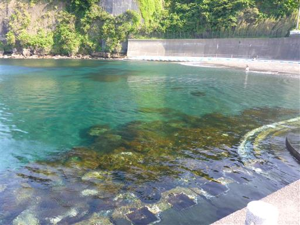
海の底がはっきりと見えている。
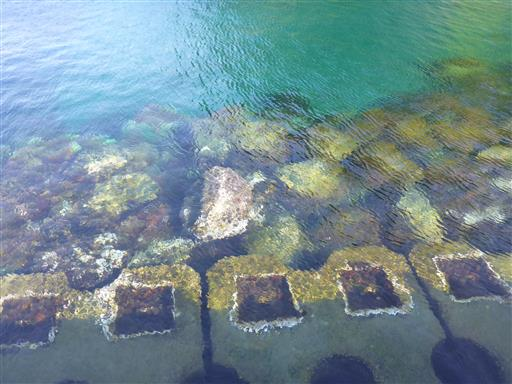
裸足になって少し海と戯れる。息子は砂が嫌なのか海に近づこうとしない。
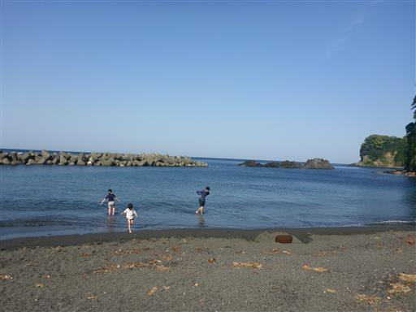
明日三原山に登る予定なので、宿に行く途中にスーパーで買い物をする。
あまり大したものが無く値段も安くないのだが、離島なので仕方がないだろう。
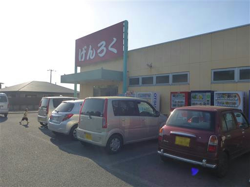
今回の旅行の宿「mock mock」に移動する。
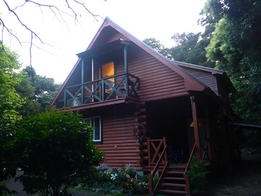
外にはツリーハウスがある。面白そうなので早速上ってみる。
それなりに高度感があり、梯子はスリルがある。
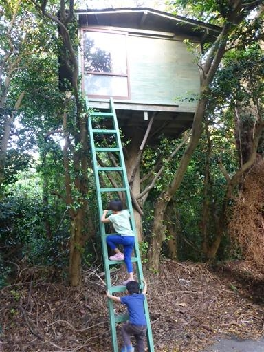
ツリーハウスの内部。息子が雑に歩くので揺れて怖い。
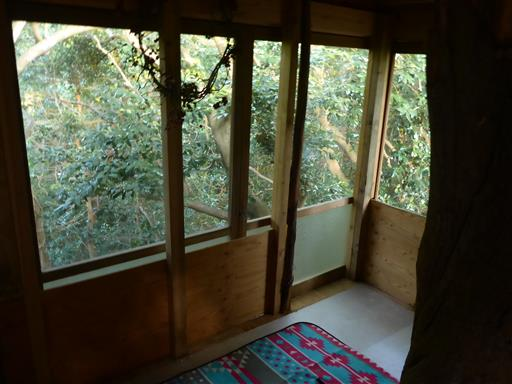
周囲は森が広がっていて、あちらこちらに雑然と物が置かれている。
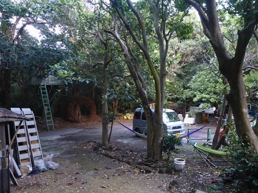
宿で飼われているカモが何羽かいる。皆で並んで歩いていると可愛らしい。
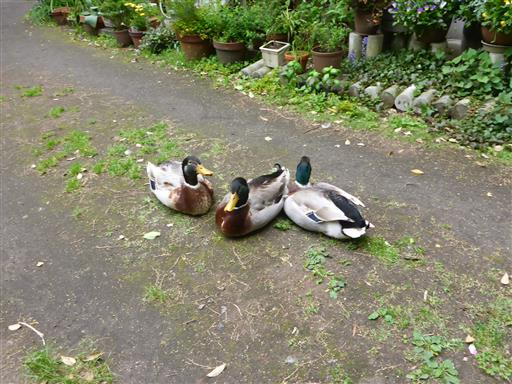
2部屋しかない小さな宿だ。
内装は凝っていて、おしゃれな小物や子供用のおもちゃなどが置かれている。
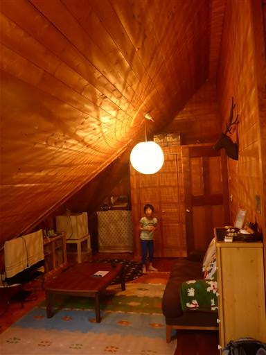
三角屋根の天窓から、星空を見ながら眠ることができる。
森の中にある宿のため、周囲の光が少なく星が良く見えた。
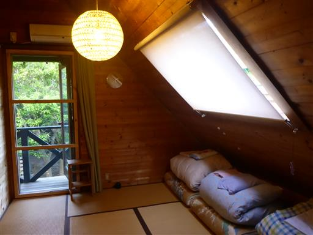